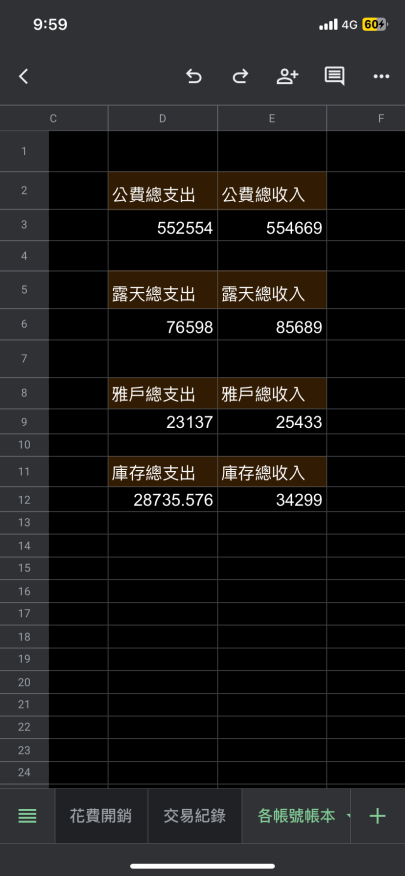

Featured Thesis
公司不再只是人力的容器。
當模型、工具鏈、資料資產與代理流程變成可組裝的生產力，企業的邊界開始變薄。真正的競爭優勢，不再只在雇了多少人，而在於能否把判斷、回饋與分配權設計成一套可演化的系統。
Read the thesisFeatured Thesis
當模型、工具鏈、資料資產與代理流程變成可組裝的生產力，企業的邊界開始變薄。真正的競爭優勢，不再只在雇了多少人，而在於能否把判斷、回饋與分配權設計成一套可演化的系統。
Read the thesis個商業假說、平台備忘錄與午夜策略筆記。
Field Note
真正的效率，是讓同一份注意力產生更高品質的決策，而不是把所有空白都塞滿工作。
Founder Profile
Current Status
背景橫跨軟體開發、個人記帳系統、社群經營、遊戲場景設計與自營代購品牌。不是只會寫程式，也實際碰過成交、客戶、現金流、社群留存與傳統企業數位轉型。
Entrepreneurship Signal
自營一年流水達 1,381,114+，營利 100,000+，累積近 1,000 筆成交。自營品牌社群 265 人，其中約 8 成 為已下單老客戶。

Software
Community / Creative
Certificates
Latest Drops
AI
當工作不再以職能切分，而以資料流與決策迴路切分，組織圖會變成另一種架構圖。
02Strategy
補貼可以啟動市場，但長期價值必須回到留存、供給品質與交易摩擦的下降。
03Brand
品牌的長期價值不只在溢價，而在降低選擇成本、合作成本與市場驗證成本。
04Organization
在 AI 時代，中層如果只負責轉述會被工具替代；如果能偵測組織噪音，就會更重要。
05Strategy
當資訊供給過剩，產品價值會從延長停留時間，轉向降低決策成本與提高完成品質。
06AI
可複製的 prompt 不算優勢；可累積的回饋、資料權與流程習慣才會拉開差距。
Longform Papers
Paper 01 / Organization
摘要：本文討論 AI 工具進入企業後，組織邊界如何從「人力規模」逐步轉向「流程、資料與決策責任」的組合。核心論點是，AI 不會單純取代組織，而會改變組織內部任務的配置方式。企業若只把 AI 視為節省人力的工具，通常只能取得短期成本優化；若能把 AI 融入回饋、審核、知識沉澱與跨部門協作，才有機會形成長期生產率提升。
第一，AI 原生公司的關鍵不在於是否使用最新模型，而在於是否重新定義任務邊界。傳統部門制通常以職能分工為基礎，例如銷售、客服、產品與財務。AI 導入後，更重要的分工會變成：哪些任務需要生成候選方案，哪些任務需要人工判斷，哪些任務需要制度化審核，哪些任務的輸出必須回流為可再利用資料。這會使組織設計從職能導向，逐步轉向流程導向。
第二，長期優勢來自高品質回饋的累積，而不是模型本身。模型能力會持續擴散，單一工具很難維持差異。相對地，客戶需求、內部修正、錯誤案例、交易結果與專業判斷，若能被穩定收集並回到流程中，就會提高下一次決策的品質。企業應關注的不是「用了多少 AI」，而是「AI 產出的錯誤是否被記錄，修正是否被制度化，判斷是否能被複用」。
第三，管理者的工作會從分配人力，轉向分配不確定性。不同流程對錯誤的容忍度不同，行銷草稿、客服初稿與內部資料整理可以接受較高的自動化比例；合約、財務、定價與客戶承諾則需要保留清楚的審核責任。成熟的 AI 原生組織不會只追求速度，而會建立明確的風險分層：低風險流程追求自動化，高風險流程追求可追溯與可問責。長期來看，這種設計會比單純裁減人力更能提升企業價值。
Paper 02 / Platform Economics
摘要：本文分析平台商業中補貼與長期價值之間的差異。補貼可以降低早期進入門檻，快速提高交易量，但交易量本身不必然代表市場品質。平台若無法在補貼期間建立供給穩定、需求留存、信任機制與匹配效率，補貼結束後的交易衰退通常會揭露其基礎薄弱。平台評估應從短期 GMV，轉向留存品質與交易效率。
第一，補貼的合理性取決於它是否能換來行為習慣。早期市場常存在冷啟動問題，供給端不願投入，需求端也缺乏使用理由。補貼可以暫時解決這個問題，但它必須轉化成可持續的使用理由，例如更低的搜尋成本、更穩定的履約、更高的供給密度，或更清楚的信任制度。若補貼只提高交易頻率，卻沒有降低平台使用摩擦，則其效果會在補貼停止後快速消失。
第二，平台流動性應以「補貼後留存」衡量。真正有價值的平台，在補貼降低後仍能維持一定比例的自然交易，原因可能是供給充足、搜尋更快、交易更安全，或使用者已經習慣平台規則。相反地，若平台在補貼減少後同時失去供給與需求，代表平台尚未建立足夠的市場基礎。這類成長不應被視為網路效應，而應被視為行銷支出的延伸。
第三，平台經營者應區分「規模」與「品質」。規模代表交易總量，品質則包含重複交易率、供給端穩定性、爭議率、履約成功率、平均匹配時間與補貼依賴度。長期來看，平台價值來自市場品質，而不是單期交易數字。若平台能在補貼期間改善品質指標，補貼就是投資；若只購買短期活躍，補貼就是成本。
Paper 03 / Brand Finance
摘要：品牌不應只被理解為行銷素材或視覺識別，而應被視為降低交易成本的長期資產。當市場供給增加、產品功能趨同、資訊驗證成本上升時，品牌可以降低使用者選擇成本、合作夥伴審查成本與人才加入風險。本文主張，品牌價值的核心不是曝光量，而是可預期性與一致性。
第一，品牌降低的是驗證成本。使用者在選擇產品時，不只比較功能，也在評估風險：產品是否穩定、公司是否可信、出問題時是否會處理、資料是否安全。當品牌長期提供一致體驗，市場就會減少每次交易前的重新驗證。這種成本下降不一定立即反映在財報中，但會影響轉換率、續約率、推薦率與價格承受度。
第二，品牌資產具有累積性，也具有負債性。穩定交付會增加信任，過度承諾則會累積負債。市場環境順利時，品牌負債不一定明顯；但當產品出錯、價格上升、競爭加劇或公司需要使用者提供更多資料時，過去累積的不信任會快速反映為流失。企業若只管理聲量，不管理承諾與交付的一致性，品牌可能從資產變成風險。
第三，科技公司尤其需要把品牌納入產品策略。AI、金融、資料工具與企業軟體都要求使用者交出較高程度的信任。這些產品的採用阻力不只來自價格，也來自不確定性。能清楚說明能力邊界、資料政策、錯誤處理與服務責任的公司，長期會比只強調功能速度的公司更容易取得高信任客戶。品牌在此不是包裝，而是產品可信度的一部分。
Paper 04 / Attention Strategy
摘要：過去許多網路產品以停留時間、點擊率與內容消費量作為核心指標。然而，當資訊供給持續增加，使用者的主要痛點會從「缺少資訊」轉向「難以判斷」。本文提出，部分產品的長期價值會從佔用注意力，轉向節省注意力。這類產品的核心能力不是讓使用者停留更久，而是降低決策成本並提高任務完成品質。
第一，注意力效率是可衡量的產品價值。當使用者面對大量選項時，真正有價值的產品會幫助其更快排除低品質選項、理解差異、形成判斷並完成後續行動。這意味著傳統指標需要被重新解讀。停留時間增加不一定代表產品成功，可能代表流程複雜；點擊次數增加不一定代表參與提高，可能代表使用者找不到答案。
第二，注意力節省型產品需要新的指標。可能的指標包括：決策時間、任務完成率、修改次數、後悔率、重複使用率、推薦採納率與人工介入比例。這些指標比單純停留時間更接近使用者價值。尤其在 AI 助理、搜尋、知識管理、財務工具與企業軟體中，使用者不是為了消費內容而來，而是為了完成判斷與行動。
第三，AI 會加速這個轉移。摘要、比較、分類、生成候選方案與自動執行，都會降低資訊處理成本。但產品仍需避免過度自動化造成失控感。長期有價值的設計，應讓使用者清楚知道系統如何產生建議、何時需要人工確認、錯誤如何修正。換言之，注意力效率不是把決策完全交給系統，而是讓人用更少成本做出更好的決策。
Signal Channel
每週一封，收錄值得慢讀的策略觀察、AI 商業實驗、品牌與組織筆記，以及一點不太像 LinkedIn 的清醒。